Amministratore di condominio senza requisiti: quali conseguenze
Chi nomina un amministratore di condominio deve verificarne i requisiti di onorabilità e professionalità previsti dall'art. 71-bis disp. att. c.c. Il difetto iniziale o la perdita …
Licenziamento orale e dimissioni di fatto: chi deve provare cosa
Il Tribunale di Lecce (sent. 3766/2026) affronta un nodo ricorrente: cosa accade quando il rapporto di lavoro si interrompe senza atti scritti. L'abbandono volontario del posto cos…

Abuso permessi 104 e licenziamento in gravidanza: i limiti del divieto
L'abuso dei permessi 104 può giustificare il licenziamento anche di una lavoratrice in gravidanza. La tutela rafforzata prevista dal D.lgs. 151/2001 non è assoluta: cede solo di fr…
Rider e piattaforme digitali: verso la presunzione di subordinazione
L'Unione europea ha adottato nel 2024 la direttiva sul lavoro mediante piattaforme digitali. Il testo prevede una presunzione di subordinazione per chi lavora tramite app e limiti …
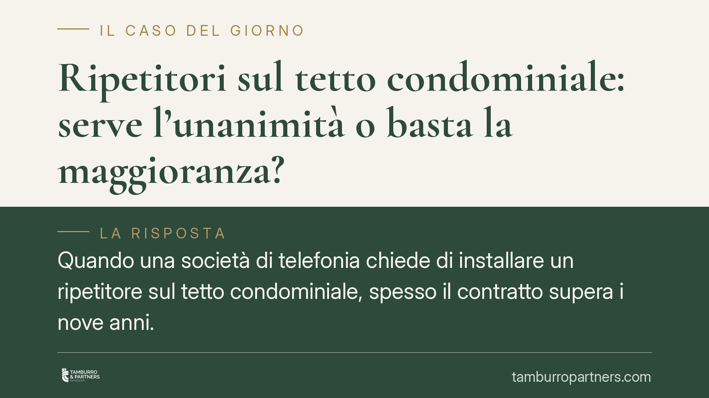
Ripetitori sul tetto condominiale: serve l'unanimità o basta la maggioranza?
Quando una società di telefonia chiede di installare un ripetitore sul tetto condominiale, spesso il contratto supera i nove anni. In questi casi non basta la maggioranza assemblea…

Cancello e inferriata sul pianerottolo: quando sono legittimi
Installare un cancello o un'inferriata davanti alla porta di casa, sul pianerottolo condominiale, è lecito? La Corte di Cassazione, con l'ordinanza n. 16944/2026, offre una rispost…
Messa alla prova negata dal Gip: perché il diniego non è abnorme
La Cassazione torna sulla messa alla prova e precisa un punto delicato: il diniego del giudice non integra un atto abnorme e non apre la strada a un ricorso immediato. Il percorso,…

Riforma forense: i profili in discussione e cosa monitorare
Torna al centro del dibattito la revisione della professione forense, con ipotesi di modifica alla Legge 247/2012 su giuramento, compatibilità del lavoro dipendente per l'attività …

Debiti dei morosi in condominio: il riparto deve prevedere il rimborso ai virtuosi
Quando il condominio anticipa i debiti dei morosi per evitare il distacco delle utenze, i condòmini in regola non diventano debitori definitivi: anticipano somme che restano un cre…

Intelligenza artificiale in studio e in azienda: quali regole valgono già oggi
L'uso dell'intelligenza artificiale negli studi professionali e nelle imprese non è più un tema teorico. Alcuni obblighi sono già operativi, altri entreranno in vigore in modo scag…
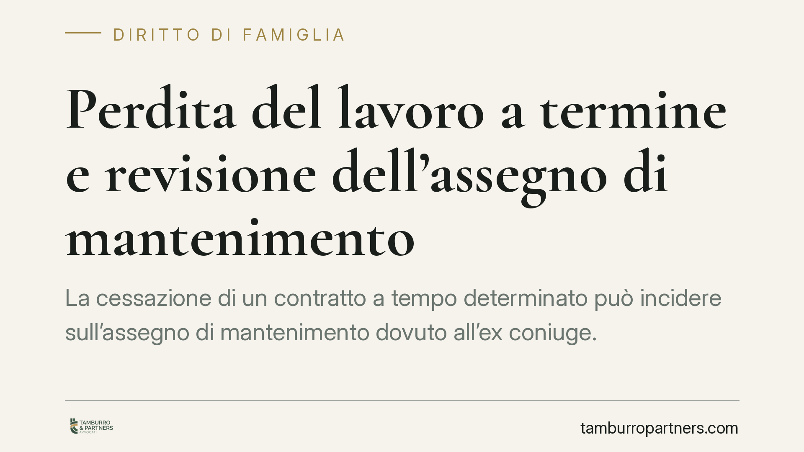
Perdita del lavoro a termine e revisione dell'assegno di mantenimento
La cessazione di un contratto a tempo determinato può incidere sull'assegno di mantenimento dovuto all'ex coniuge. La giurisprudenza di legittimità ammette la revisione quando la p…
Commercialista e sanzioni della società cliente: quando scatta la responsabilità
Il consulente esterno non è al riparo dietro la personalità giuridica della società cliente. Quando fornisce un contributo attivo e consapevole all'illecito, può essere chiamato a …

Commercialista e bancarotta: quando la consulenza diventa concorso nel reato
Un commercialista può essere condannato per bancarotta fraudolenta? Sì, se smette di consigliare e inizia a gestire. La Cassazione distingue la consulenza tecnica lecita dal concor…
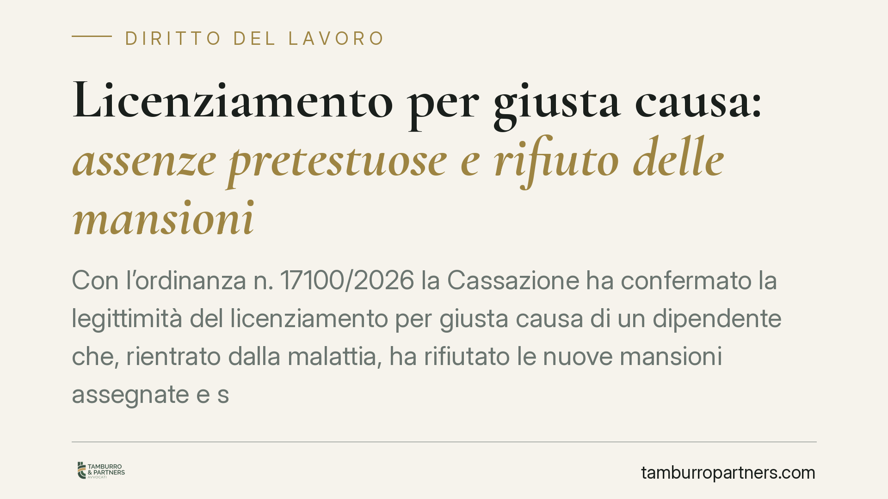
Licenziamento per giusta causa: assenze pretestuose e rifiuto delle mansioni
Con l'ordinanza n. 17100/2026 la Cassazione ha confermato la legittimità del licenziamento per giusta causa di un dipendente che, rientrato dalla malattia, ha rifiutato le nuove ma…
Superminimo e promozioni: quando l'aumento può assorbire la voce aggiuntiva
Dopo una promozione, il datore può assorbire il superminimo nell'aumento tabellare? Un recente orientamento della Sezione Lavoro conferma che sì, salvo che il lavoratore provi un p…
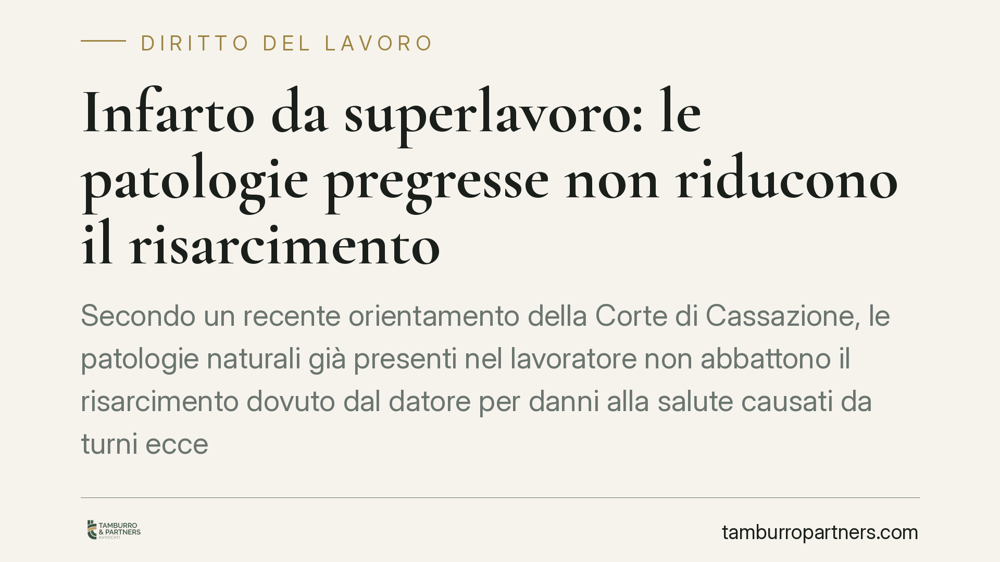
Infarto da superlavoro: le patologie pregresse non riducono il risarcimento
Secondo un recente orientamento della Corte di Cassazione, le patologie naturali già presenti nel lavoratore non abbattono il risarcimento dovuto dal datore per danni alla salute c…
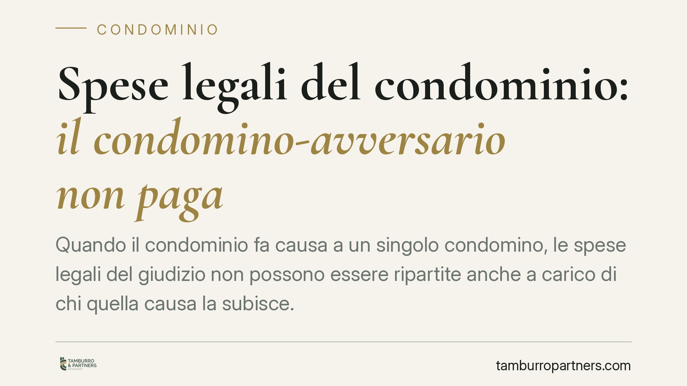
Spese legali del condominio: il condomino-avversario non paga
Quando il condominio fa causa a un singolo condomino, le spese legali del giudizio non possono essere ripartite anche a carico di chi quella causa la subisce. Lo ribadisce la Cassa…
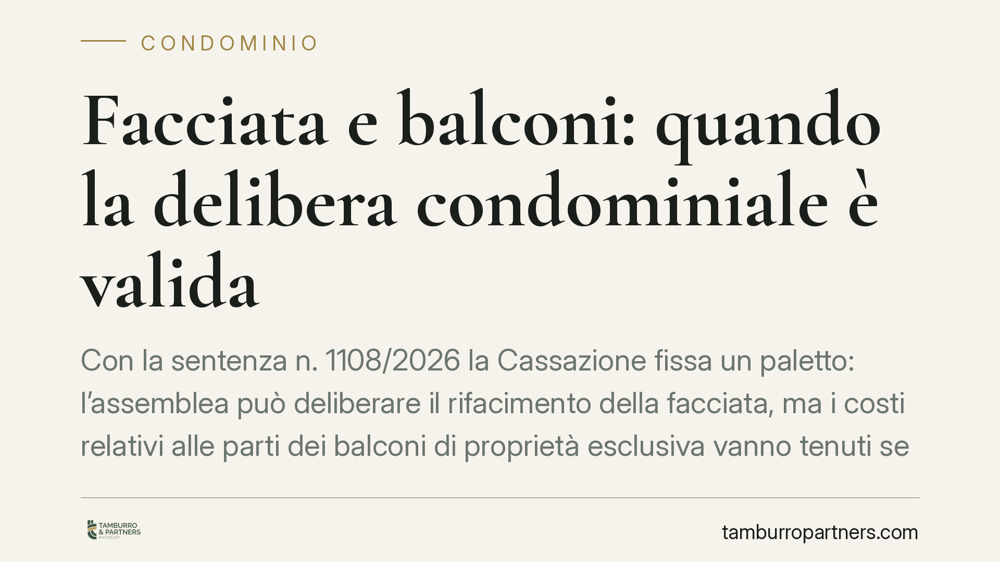
Facciata e balconi: quando la delibera condominiale è valida
Con la sentenza n. 1108/2026 la Cassazione fissa un paletto: l'assemblea può deliberare il rifacimento della facciata, ma i costi relativi alle parti dei balconi di proprietà esclu…

Assegno di mantenimento figli: quando il calo del reddito giustifica la riduzione
Con l'ordinanza n. 24422/2026 la Cassazione affronta un nodo ricorrente: la riduzione dell'assegno di mantenimento quando il genitore obbligato subisce un calo reddituale oggettivo…
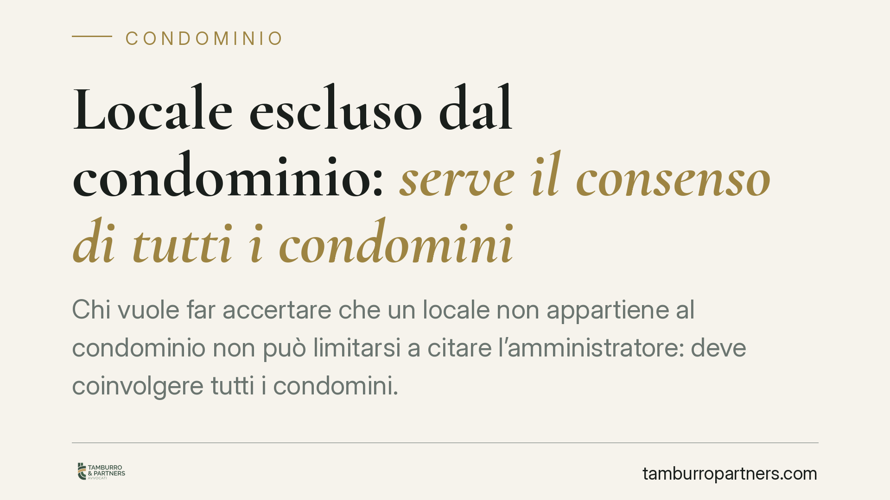
Locale escluso dal condominio: serve il consenso di tutti i condomini
Chi vuole far accertare che un locale non appartiene al condominio non può limitarsi a citare l'amministratore: deve coinvolgere tutti i condomini. Lo ribadisce la Cassazione, che …

Contratto a termine senza firma: è valido?
Un contratto a tempo determinato privo di firma non è un dettaglio formale: senza atto scritto il termine è nullo e il rapporto si considera a tempo indeterminato fin dall'origine.…
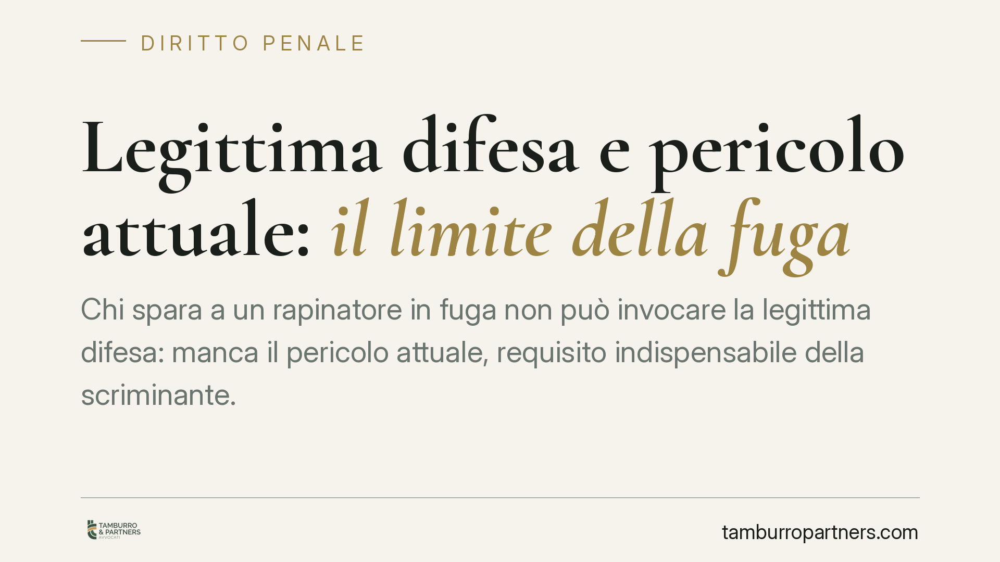
Legittima difesa e pericolo attuale: il limite della fuga
Chi spara a un rapinatore in fuga non può invocare la legittima difesa: manca il pericolo attuale, requisito indispensabile della scriminante. Lo ha ribadito la Corte di Cassazione…
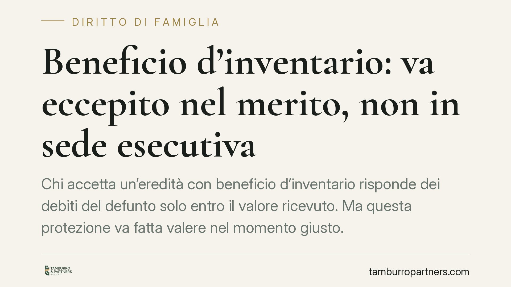
Beneficio d'inventario: va eccepito nel merito, non in sede esecutiva
Chi accetta un'eredità con beneficio d'inventario risponde dei debiti del defunto solo entro il valore ricevuto. Ma questa protezione va fatta valere nel momento giusto. Secondo un…
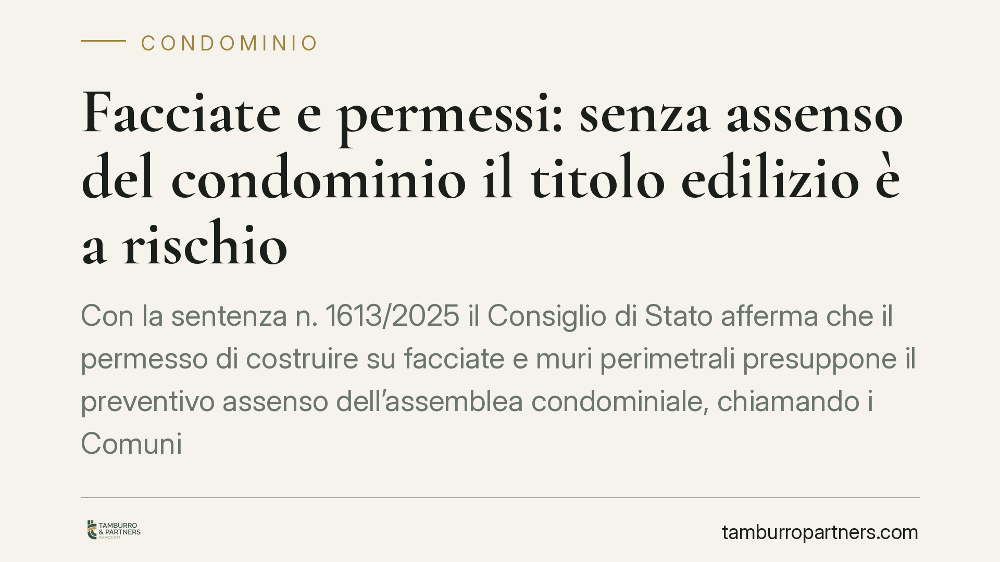
Facciate e permessi: senza assenso del condominio il titolo edilizio è a rischio
Con la sentenza n. 1613/2025 il Consiglio di Stato afferma che il permesso di costruire su facciate e muri perimetrali presuppone il preventivo assenso dell'assemblea condominiale,…
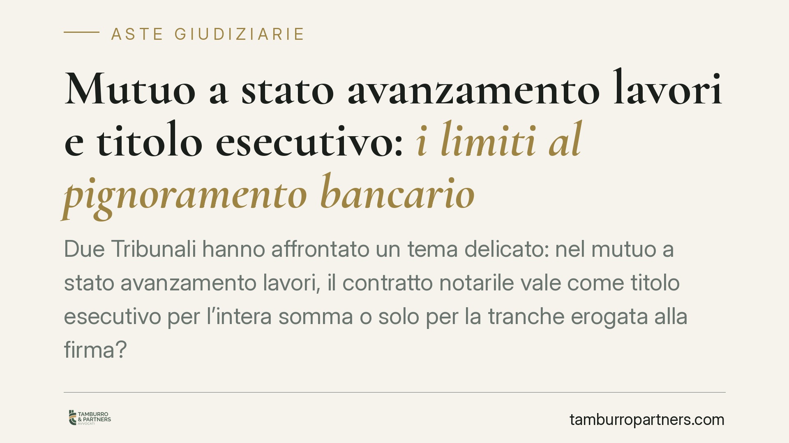
Mutuo a stato avanzamento lavori e titolo esecutivo: i limiti al pignoramento bancario
Due Tribunali hanno affrontato un tema delicato: nel mutuo a stato avanzamento lavori, il contratto notarile vale come titolo esecutivo per l'intera somma o solo per la tranche ero…
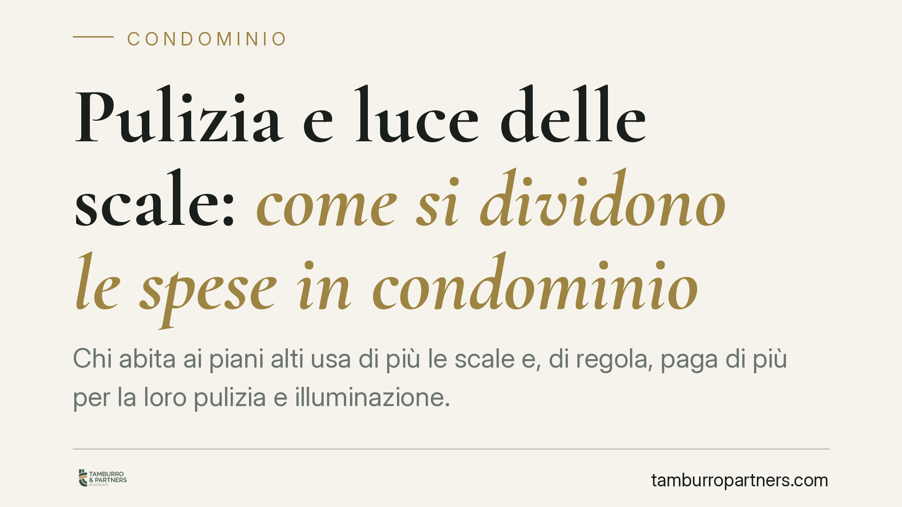
Pulizia e luce delle scale: come si dividono le spese in condominio
Chi abita ai piani alti usa di più le scale e, di regola, paga di più per la loro pulizia e illuminazione. È un principio spesso frainteso in assemblea, perché confuso con le regol…
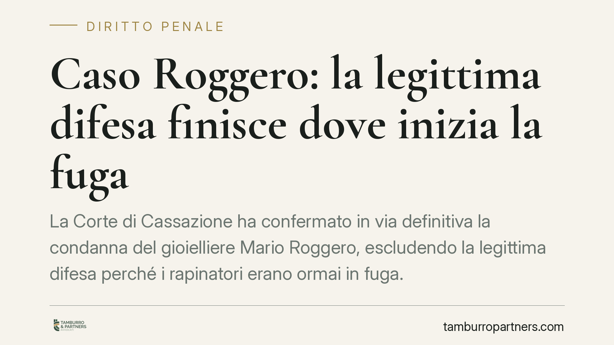
Caso Roggero: la legittima difesa finisce dove inizia la fuga
La Corte di Cassazione ha confermato in via definitiva la condanna del gioielliere Mario Roggero, escludendo la legittima difesa perché i rapinatori erano ormai in fuga. La pronunc…
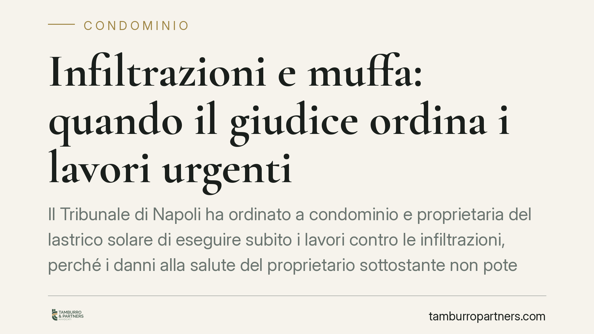
Infiltrazioni e muffa: quando il giudice ordina i lavori urgenti
Il Tribunale di Napoli ha ordinato a condominio e proprietaria del lastrico solare di eseguire subito i lavori contro le infiltrazioni, perché i danni alla salute del proprietario …
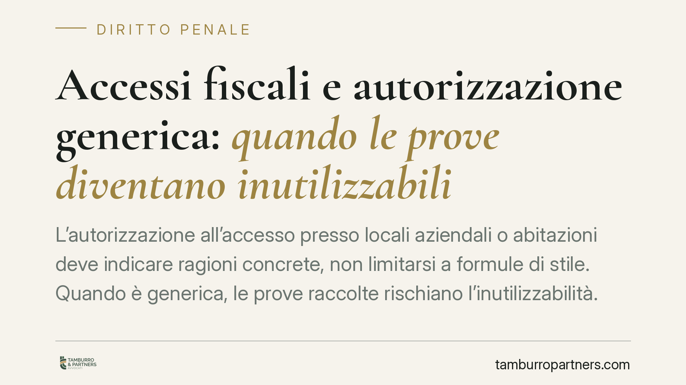
Accessi fiscali e autorizzazione generica: quando le prove diventano inutilizzabili
L'autorizzazione all'accesso presso locali aziendali o abitazioni deve indicare ragioni concrete, non limitarsi a formule di stile. Quando è generica, le prove raccolte rischiano l…

Sosta davanti al box nell'area di manovra: serve il consenso del condominio
Il Tribunale di Brescia, con la sentenza n. 5149/2026, ha stabilito che nessun condomino può parcheggiare stabilmente davanti al proprio box nell'area comune destinata alla manovra…